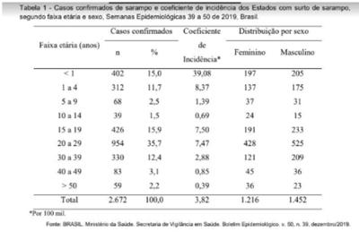
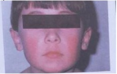

Questão 2 · Varicela · 4000183706Um paciente de 6 anos de idade está com febre, inapetência, lesões polimór cas, centrípetas e pruriginosas por todo o corpo, além de lesões orais. O estado vacinal dele é desconhecido. Nesse caso clínico, o diagnóstico mais provável é de
A impetigo.
B rubéola.
C varicela.
D prurigo estrófulo.
E eritema infeccioso.
Revisar: possível letra faltando em enunciado
Questão 3 · Rubéola · Varicela · Eritema Inf eccioso · 4000182675Em relação às doenças exantemáticas, numerar a 2ª coluna de acordo com a 1ª e, após, assinalar a alternativa que apresenta a sequência CORRETA: (1) Rubéola. (2) Eritema infeccioso. (3) Exantema súbito. (4) Varicela. (_) A complicação mais frequente é relacionada à infecção bacteriana secundária. (_) Alto risco de infecção vertical no 1º trimestre de gestação. (_) Risco de anemia grave nos indivíduos com hemoglobinopatias. (_) Após a defervescência da febre, surge o exantema maculopapular, que se inicia no tronco e se dissemina para as extremidades, acometendo palmas e plantas.
A 4 - 2 - 3 - 1.
B 2 - 3 - 4 - 1.
C 4 - 1 - 2 - 3.
D 3 - 2 - 1 - 4.
Questão 4 · Sarampo · 4000182146O conhecimento dos períodos de incubação e de transmissibilidade de uma doença infecciosa é essencial para o médico orientar adequadamente a conduta frente às situações em que ocorre contato entre um indivíduo infectado e outras pessoas da população. Para o sarampo, os períodos de incubação e de transmissibilidade são, respectivamente, de 7 a 18 dias até o aparecimento da febre, e de quatro dias antes a quatro dias após o surgimento do exantema. Suponha que a criança A tenha regressado recentemente de um país europeu e que no dia 1⁰/10/2022 apresentou sinais e sintomas de sarampo com surgimento de exantema. No dia 30/9/2022, havia tido contato com a criança B, nunca vacinada contra sarampo. Frente a essa situação, você indicaria:
A Quarentena até 7/10 para A e isolamento até 6/10 para B.
B Quarentena até 6/10 para A e isolamento até 15/10 para B.
C Isolamento até 5/10 para A e quarentena até 18/10 para B.
D Isolamento até 9/10 para A e quarentena até 14/10 para B.
Questão 5 · Eritema Inf eccioso · 4000181779Leia o caso clínico. Menina, cinco anos, evoluindo há quatro dias com surgimento de manchas eritematosas nas regiões malares, poupando a região perioral, e rash de aspecto reticulado no tronco e na parte proximal das extremidades, poupando as palmas e as plantas. Apresentava ainda astenia e febre baixa. Sobre o caso acima, o diagnóstico da paciente é
A exantema súbito.
B eritema infeccioso.
C doença mão-pé-boca.
D rubéola.
Questão 6 · Vacinas contra sarampo caxumba rubéola e varicela · Imunoglobulina antisarampo · 4000169263Vigilância Epidemiológica Criança de 2 anos de idade, feminina, apresenta febre de 38,5ºC há 1 dia, tosse, coriza, conjuntivite, com exantema que surgiu atrás das orelhas, no rosto e se espalhou pelo corpo. Foi a Unidade de Pronto Atendimento (UPA) onde foi feita a suspeita de sarampo. Frequentou a Creche Municipal até o dia anterior ao início dos sintomas. Esta creche atende crianças de 6 meses a 5 anos de idade. Qual a medida de controle recomendada para interromper a cadeia de transmissão do sarampo na Creche e no domicílio desta criança?
A A medida recomendada é o bloqueio vacinal seletivo, para vacinar os não vacinados, após o contato com o caso suspeito. Deve ser realizado a partir dos 6 meses de idade, no menor tempo possível (prazo máximo de até 72 horas) com a vacina tríplice viral ou tetraviral.
B A medida recomendada é a convocação de faltosos no município onde ocorreu o caso, para vacinar os não vacinados. Deve ser realizado a partir dos 24 meses de idade, prazo máximo de até 7 dias, com a vacina tríplice viral ou tetraviral.
C A medida recomendada é varredura indiscriminada, para vacinar todos os contatos (vacinados ou não), após o contato com o caso suspeito. Deve ser realizado a partir do 3 meses de idade, prazo máximo de até 10 dias, com a vacina tríplice viral ou tetraviral.
D A medida recomendada é a convocação de faltosos para vacinar com a Vacina Tríplice Viral (SCR), preferencialmente no prazo máximo de até 48 horas, para as crianças menores de 6 meses que não receberam nenhuma dose da tríplice viral.
Questão 7 · Aspectos Clínicos · 4000168869Menino, 8 anos de idade, é trazido pela genitora ao ambulatório com queixa de lesões de pele e dor leve em articulações. Relata que, há aproximadamente uma semana, apresentou febre, cefaleia, coriza e adinamia. As lesões de pele, por vezes clareiam e retomam; e são pouco pruriginosas. A genitora informa que o menor é falcémico. Ao exame, está hipoativo, afebril, hipocorado ++/IV. Observa-se rubor facial concentrado nas bochechas e exantema macular, de aspecto rendilhado, em membros, poupando regiões plantares e palmares. Diante do caso, indique a possível complicação decorrente dessa doença.
A Febre reumática.
B Aplasia medular.
C Encefalite.
D Mielite.
Questão 8 · Diagnóstico · 4000168867Menino, 8 anos de idade, é trazido pela genitora ao ambulatório com queixa de lesões de pele e dor leve em articulações. Relata que, há aproximadamente uma semana, apresentou febre, cefaleia, coriza e adinamia. As lesões de pele, por vezes clareiam e retomam; e são pouco pruriginosas. A genitora informa que o menor é falcémico. Ao exame, está hipoativo, afebril, hipocorado ++/IV. Observa-se rubor facial concentrado nas bochechas e exantema macular, de aspecto rendilhado, em membros, poupando regiões plantares e palmares. Com base nas informações apresentadas, indique o diagnóstico para essa criança.
A Sarampo.
B Rubéola.
C Eritema infeccioso.
D Artrite reumatoide juvenil.
Questão 9 · Pediatria · Exantema Súbito · 4000166525Lactente de 10 meses com história de febre alta nos últimos três dias (3 episódios ao dia), com irritabilidade e discreta diminuição do apetite. Logo após o desaparecimento do último pico febril, passou a apresentar rash maculopapular, que começou no tronco e evoluiu para cabeça e membros. A principal hipótese diagnóstica é:
A Exantema súbito por Parvovírus B-19.
B Roseola infantum por Varicela Zoster.
C Escarlatina por Streptococcus beta hemolítico do grupo A.
D Exantema súbito por Herpes 6 e 7
Questão 10 · Pediatria · Sarampo · Tratamento · 4000164985Adolescente, 17 anos, que desconhece o seu estado vacinal, é admitido com história de febre alta, cefaleia, tosse e conjuntivite há 10 dias, além de apresentar exantema macular, confluente no tronco e face, nos últimos 7 dias. Suspeita-se de sarampo. Neste contexto, pode-se afirmar que:
A a complicação mais comum é meningoencefalite viral
B o exame da orofaringe revelará manchas de
C deve-se recomendar a administração de vitamina A
D o uso de corticoide sistêmico é recomendável para evitarem-se complicações
Questão 11 · Herpangina Doença MãoPéBoca · Pediatria · 4000164561Paciente de 6 anos de idade, com quadro de febre baixa, mal-estar e dor de garganta há 2 dias, vem à Unidade Básica de Saúde apresentando lesões ulceradas, doloridas, na cavidade oral, sobretudo em língua e palato. Também refere o aparecimento de lesões nas laterais dos dedos e na superfície dorsal de mãos e pés. Considerando que a principal suspeita seja a síndrome mão-pé-boca, qual é o provável germe causador?
A Epstein-Barr Virus.
B Morbillivírus.
C Coxsackie vírus.
D Paramixovirus.
Questão 12 · Pediatria · Exantema Súbito · 4000164541Lactente de 10 meses é trazido à consulta com história de febre há 3 dias, em uso de amoxicilina desde a noite anterior. A mãe refere o surgimento de manchas no corpo que atribuiu à provável alergia ao antimicrobiano, já que a febre desapareceu na primeira administração do medicamento. Ao exame físico, se encontra em bom estado geral e ativo, sendo os únicos achados alterados orofaringe hiperemiada, e presença de lesões maculares sem relevo em tronco. Qual hipótese diagnóstica mais provável e conduta pertinente para o caso?
A Reação alérgica ao antimicrobiano, trocar para Azitromicina e revisar em 48 horas.
B Reação alérgica ao antimicrobiano, iniciar anti-histamínico, manter Amoxicilina e revisar em 24 horas.
C Exantema súbito (roséola), manter antimicrobiano, solicitar hemograma e revisar com resultado.
D Exantema viral (roséola), suspender antimicrobiano, manter observação domiciliar, revisar se retornar febre ou alteração do quadro clínico.
Questão 13 · Escarlatina · 4000164407MP, sexo feminino, 7 anos de idade, com queixa de dor de garganta e febre de 38,9 °C há 3 dias, lesões na pele há 1 dia e dor abdominal difusa hoje. Nega tosse, coriza e alteração do hábito intestinal. Apresenta, ao exame físico, exantema cutâneo micropapular áspero generalizado, com palidez perioral e hiperemia em dobras cutâneas. Linfonodos palpáveis menores do que 1 cm em cadeia cervical e submandibulares bilateralmente. Orofaringe hiperemiada com petéquias em palato e descompressão brusca negativa. Entre as seguintes propostas terapêuticas, a mais adequada para este paciente é:
A Paracetamol, Ibuprofeno e Hidroxizine.
B Paracetamol e Ibuprofeno.
C Azitromicina, Hidroxizine e Dipirona.
D Dipirona e Amoxicilina.
Questão 14 · Exantema Súbito · 4000164405Lactente de 8 meses, previamente hígido, apresenta história de febre diária de 38,5° a 39 °C há 5 dias e irritabilidade. Há um dia apresenta manchas rosadas em tronco que se espalharam para os membros. Não apresentou tosse, coriza ou diarreia. Está se alimentando normalmente e afebril desde ontem. Ao exame físico apresenta bom estado geral, otoscopia com leve hiperemia bilateral, orofaringe sem alteração e exantema maculopapular, não coalescente e sem descamação, localizado em tronco, raiz dos membros e discreto em face. Restante do exame físico sem alteração. Dentre os agentes etiológicos abaixo, o mais provável neste caso é:
A Parvovírus humano B19.
B Herpes vírus 6.
C Coxsackie vírus.
D Epstein-Barr vírus.
Questão 15 · Vacinas contra sarampo caxumba rubéola e varicela · Vigilância Epidemiológica · 4000163680Mãe trouxe para avaliação no posto de saúde um lactente com 6 meses de idade, que apresentava, há 3 dias, febre, tosse seca, prostrac abundante e hialina e os olhos hiperemiados. Na orofaringe apresentava-se hiperemiada com manchas branco-azuladas e pequenas. Mãe relata que um tio havia chegado de viagem e estava com sintomas semelhantes com suspeita de Sarampo. Como devemos proceder quanto ao bloqueio vacinal?
A Caracterizando situação de surto, os contactantes gestantes e crianças abaixo dos 6 meses de idade também devem ser vacinados.
B A aplicação da vacina deve ser realizada no prazo máximo de 5 dias, nos contactantes, apenas no caso confirmado de sarampo.
C Contatos com idade a partir dos 3 meses até 11 meses e 29 dias devem receber uma dose da vacina tríplice viral válida para a rotina de vacinação.
D A vacinação de bloqueio deve ser realizada no prazo máximo de até 72 horas após o contato com o caso suspeito ou confirmado de sarampo.
Questão 16 · Pediatria · Exantema Súbito · 4000146480Lactente, sexo masculino, 10 meses, procedente de viagem recente para Belém, apresenta história de febre por cerca de 72 horas (3 episódios ao dia de 38 a 38,5 graus), com irritabilidade. Mantém boa aceitação hídrica. Após cessar do último pico febril (há cerca de 24 horas), apresentou exantema maculopapular, que começou no tronco e evoluiu para cabeça e membros. Qual a principal hipótese diagnóstica e o respectivo agente etiológico?
A Eritema infeccioso por parvovírus B-19.
B Roseola infantum por vírus varicela-zóster.
C Dengue leve, por um dos quatro tipos de vírus da dengue.
D Exantema súbito por herpesvírus 6.
E Sarampo por morbilivírus.
Questão 17 · Pediatria · Exantema Súbito · 4000146056Lactente de um ano, nascido a termo, iniciou há três dias febre alta, persistente, sem sintomas associados, sem toxemia. Hoje não apresentou mais nenhum pico febril, porém pais observaram o aparecimento de “lesões na pele”, inicialmente no tronco e depois se espalhando para membros e cabeça. Negam antecedentes relevantes. Calendário vacinal atualizado. Trazem criança à unidade de saúde para avaliação médica. Ao exame clínico: lactente ativo, afebril, normocorado, hidratado, sinais vitais normais. Ausculta cardiopulmonar e exame abdominal sem alterações. Exantema maculopapular difuso, poupando regiões palmares e plantares. Indique o diagnóstico e o agente etiológico compatíveis com o quadro:
A Exantema súbito; herpes-vírus humano 6.
B Exantema súbito; parvovírus B19.
C Eritema infeccioso; parvovírus B19.
D Eritema infeccioso; herpes-vírus humano 6. ida oib pr ed
Questão 18 · Pediatria · Sarampo · 4000145833Menino com 8 anos de idade, morador em região ribeirinha do Acre, não possui caderneta de imunização. A mãe informa que até o momento a criança só recebeu 2 vacinas, ao nascer e outra aos 2 meses de idade. Apresenta febre alta há 4 dias, coriza purulenta, tosse, hiperemia de conjuntivas, fotofobia, lacrimejamento, hiperemia de orofaringe hiperemiada e com manchas branco-azuladas. A hipótese diagnóstica mais provável é:
A rubéola
B sarampo
C eritema infeccioso
D mononucleose infecciosa
Questão 19 · Eritema Inf eccioso · 4000142547Menina de 10 anos estava hígida até há 1 dia, quando iniciou com exantema na face tipo máculo-pápulas que con uem, tornando-se uma placa vermelho-rubra, concentrada principalmente na região das bochechas, poupando a região perioral, conferindo um aspecto de “asa de borboleta”. No terceiro dia, o exantema evoluiu, acometendo os membros superiores e inferiores com aspecto rendilhado. Exacerba-se quando exposto ao sol ou quando a criança faz exercício. Qual é o agente dessa doença?
A Togavírus.
B Parvovírus humano B19.
C Herpes-vírus humano 6.
D Vírus Epstein-Barr.
E Rhinovírus.
Questão 20 · Pediatria · Eritema Inf eccioso · 4000141836E.J.F, 8 anos, sexo masculino, apresenta manchas no corpo há 5 dias. O exantema teve início em face e, no segundo dia, progrediu para tronco e membros. Apresentou um pico febril no início do quadro. Relata ainda dor em articulações dos punhos e joelhos. Ao exame, observa-se exantema maculopapular, que é mais intenso e con uente nas bochechas, enquanto no restante do corpo, tem aspecto rendilhado. Articulações de punhos e joelhos com dor à mobilização, sem calor, edema ou rubor. Restante do exame físico é completamente normal. Qual o agente etiológico mais provável para esse caso?
A Herpes-vírus humanos 6 e 7
B Parvovírus B19
C Vírus Epstein-Barr
D Vírus Coxsackie
E Streptococcus
Questão 21 · Agente etiológico e epidemiologia · Pediatria · 4000141346Considerando a doença de escarlatina:
A Escarlatina é uma doença infectocontagiosa aguda, provocada pela bactéria
B Escarlatina é uma doença infectocontagiosa aguda, provocada pela bactéria
C Escarlatina é uma doença infectocontagiosa aguda, provocada pela bactéria
D Escarlatina é uma doença infectocontagiosa aguda, provocada pela bactéria
Questão 23 · Diagnósticos dif erenciais · Pediatria · Sarampo · 4000141153Menina, 7 meses, comparece hoje no pronto-socorro com tosse, coriza e manchas vermelhas pelo corpo há dois dias. Nega comorbidades e contactantes com sintomas semelhantesExame físico: bom estado geral, corada, anictérica, FR= 28 irpm, hiperemia conjuntival bilateral, coriza e obstrução nasal, linfonodos broelásticos móveis e indolores de até um centímetro em cadeias cervicais, Pulmões: murmúrio vesicular presente bilateralmente com roncos de transmissão; Pele: exantema macular em face e tronco. A carteira de vacina inclui as seguintes doses (ANEXO A): A CONDUTA É:

A Hidratação, higiene nasal com soro fisiológico e reavaliação em 48 horas.
B Notificação de evento adverso à vacina e contraindicar doses subsequentes.
C Internação para administração de imunoglobulina.
D Coleta de sorologia e RT-PCR para o vírus do sarampo.
Questão 24 · Aspectos Clínicos · Diagnósticos dif erenciais · Pediatria · 4000141069Menina de 9 meses foi levada ao pronto-socorro com história de febre alta (39ºC), inapetência e irritabilidade, sem outras queixas. Como estava em bom estado geral, com exame físico normal e hemograma sem alterações, foi orientado uso de antitérmico e retorno no caso de haver sinais de alerta. Retorna após 4 dias devido aparecimento de lesões avermelhadas pelo corpo, apesar de ter cado afebril nas últimas 24 horas. O exame físico atual revela exantema maculopapular róseo em tronco, pescoço e braços, sem outras alterações. A principal hipótese diagnóstica é:
A farmacodermia devido ao uso do antitérmico.
B sarampo.
C rubéola.
D escarlatina.
E exantema súbito.
Revisar: possível letra faltando em enunciado
Questão 25 · Pediatria · Exantema Súbito · 4000140598Paciente de 1 ano, com febre alta há 3 dias, evoluiu, no quarto dia, com exantema macular e crânio caudal. Mãe nega sinais catarrais na criança além de referir que esta não apresentou mais febre após o surgimento do exantema e mantém o apetite. O cartão de vacinas está atualizado. Ao realizar exame físico, apresenta estado geral preservado, e o hemograma solicitado está sem alterações. Diante desse quadro, a doença exantemática mais provável é
A escarlatina.
B sarampo.
C exantema súbito.
D eritema infeccioso.
Questão 26 · Pediatria · Exantema Súbito · 4000140473José, 6 meses, apresenta quadro de febre até 39 oC há três dias, leve prostração e irritabilidade, sem outras queixas. Realizado hemograma e urina 1 sem alterações. Mãe orientada a retornar em 24 horas para reavaliação. No retorno, paciente encontra-se melhor da prostração, ainda irritado e com exantema maculopapular por todo o corpo. O agente etiológico responsável pelo diagnóstico mais provável desta criança é:
A vírus da rubéola.
B parvovírus b19.
C herpes vírus humano tipo 6.
D zika vírus.
E Treponema pallidum.
Questão 27 · Mononucleose · Herpangina Doença MãoPéBoca · Rubéola · 4000138300Correlacione as colunas: COLUNA 1 1. Sinal de 2. Linfonodomegalia occipital e cervical posterior. 3. Crise aplásica. 4. Febre alta que some em crise. 5. Sinais de 6. Polimorfismo regional. COLUNA 2 [ ] Varicela. [ ] Sarampo. [ ] Escarlatina. [ ] Exantema súbito. [ ] Eritema infeccioso. [ ] Rubéola
A 5, 6, 4, 2, 3, 1.
B 6, 1, 5, 4, 3, 2.
C 6, 5, 3, 4, 1, 2.
D 5, 6, 4, 3, 1, 2.
E 6, 1, 4, 5, 3, 2.
Questão 28 · Pediatria · Eritema Inf eccioso · 4000137966Paciente, sexo feminino, 3 anos de idade, é levada ao pediatra com história de manchas avermelhadas em face e posteriormente em tronco e extremidades. Negava febre e anorexia. Ao exame físico encontrava-se em bom estado geral e afebril com presença de eritema malar bilateral e exantema máculo-papular de aspecto rendilhado em tronco e extremidades proximais, poupando a palma das mãos e a planta dos pés. O agente etiológico mais provável deste quadro clínico, dentre os abaixo, é:
A Parvovírus B19.
B Citomegalovírus.
C Paramixovírus.
D Epstein-Barr vírus.
E Adenovírus.
Questão 29 · Aspectos Clínicos · Pediatria · Sarampo · 4000137960Uma criança do sexo masculino, 3 anos de idade, apresenta quadro clínico compatível com sarampo. A complicação, dentre as abaixo, que tem maior probabilidade de ocorrer como complicação nessa criança é
A encefalite aguda.
B orquiepididimite.
C intussuscepção.
D pneumonia.
E panencefalite esclerosante.
Questão 30 · Pediatria · Sarampo · 4000131201Uma criança de 1 ano e 4 meses de idade, com histórico de aleitamento materno exclusivo até os 6 meses, é levada a atendimento pela mãe que referiu tosse, febre, hiperemia ocular e aparecimento de “manchas” brancas em mucosa oral, com posterior aparecimento de “manchas” vermelhas no corpo. Ao exame, apresenta temperatura axilar de 38 °C e exantema maculopapular avermelhado, de progressão craniocaudal. Com base nesse caso clínico e nos conhecimentos médicos correlatos, julgue os itens a seguir. A transmissão dessa doença dá-se por meio de aerossol e gotículas de secreção respiratória.
A Certo.
B Errado.
Questão 31 · Pediatria · Quadro clínico · 4000131197Uma criança de 1 ano e 4 meses de idade, com histórico de aleitamento materno exclusivo até os 6 meses, é levada a atendimento pela mãe que referiu tosse, febre, hiperemia ocular e aparecimento de “manchas” brancas em mucosa oral, com posterior aparecimento de “manchas” vermelhas no corpo. Ao exame, apresenta temperatura axilar de 38 °C e exantema maculopapular avermelhado, de progressão craniocaudal. Com base nesse caso clínico e nos conhecimentos médicos correlatos, julgue os itens a seguir. A presença de pequenos pontos brancos em mucosa oral antecedendo o exantema é um sinal patognomônico dessa doença.
A Certo.
B Errado.
Questão 32 · Pediatria · Vigilância Epidemiológica · 4000131195Uma criança de 1 ano e 4 meses de idade, com histórico de aleitamento materno exclusivo até os 6 meses, é levada a atendimento pela mãe que referiu tosse, febre, hiperemia ocular e aparecimento de “manchas” brancas em mucosa oral, com posterior aparecimento de “manchas” vermelhas no corpo. Ao exame, apresenta temperatura axilar de 38 °C e exantema maculopapular avermelhado, de progressão craniocaudal. Com base nesse caso clínico e nos conhecimentos médicos correlatos, julgue os itens a seguir. A vacina que contempla essa doença é realizada aos 12, aos 15 e aos 24 meses de vida.
A Certo.
B Errado.
Questão 33 · Pediatria · Vigilância Epidemiológica · 4000131193Uma criança de 1 ano e 4 meses de idade, com histórico de aleitamento materno exclusivo até os 6 meses, é levada a atendimento pela mãe que referiu tosse, febre, hiperemia ocular e aparecimento de “manchas” brancas em mucosa oral, com posterior aparecimento de “manchas” vermelhas no corpo. Ao exame, apresenta temperatura axilar de 38 °C e exantema maculopapular avermelhado, de progressão craniocaudal. Com base nesse caso clínico e nos conhecimentos médicos correlatos, julgue os itens a seguir. Trata-se de uma doença de notificação compulsória imediata.
A Certo.
B Errado.
Questão 34 · Quadro clínico · 4000131012Assinale a alternativa que contenha dados que, segundo o Ministério da Saúde, corroborem a suspeita de sarampo numa criança com febre e exantema maculopapular:
A Tosse, coriza e conjuntivite
B Diarreia e prurido
C Artralgia e mialgia
D Edema palpebral e odinofagia
E Prurido e sudorese noturna
Questão 35 · Pediatria · Sarampo · 4000129545Lactante de 9 meses de idade, desnutrido, é levado para consulta na UBS devido quadro de febre (39ºC), tosse, conjuntivite e coriza nasal iniciados há 2 dias. No 3º dia houve piora da febre e aparecimento de rash cutâneo eritematoso morbiliforme com acometimento inicial da face, e posteriormente, pescoço e tronco. Qual o diagnóstico e qual conduta a ser adotada?
A Varicela e Aciclovir.
B Rubéola e Sintomáticos.
C Sarampo e Vitamina A.
D Exantema súbito e Sintomáticos.
Questão 36 · Herpangina · Herpangina Doença MãoPéBoca · 4000129428Paciente com 10 meses apresenta febre de 39°C há 24 horas, acompanhada de náuseas e recusa alimentar. Na consulta do pronto atendimento, verifica-se que seus sinais vitais estão normais, com saturação de oxigênio de 97% em ar ambiente. Ao exame físico, está com conjuntivas levemente hiperemiadas, coriza hialina e várias úlceras e erosões em mucosa oral. No tórax, abdome e nas mãos, há algumas lesões papulares e eritematosas. A conduta indicada para esse paciente é:
A Solicitar hemograma, hemocultura e provas virais e deixá-lo em sala de observação.
B Prescrever antitérmicos por via oral e orientar familiares para cuidados domiciliares.
C Iniciar com antibioticoterapia, via intravenosa, na primeira hora de observação.
D Administrar infusão em push de solução fisiológica por via intravenosa.
Questão 37 · Pediatria · Eritema Inf eccioso · 4000130324Criança, 4a, é trazida a Unidade de Emergência com queixa de tosse, coriza nasal e manchas vermelhas pelo corpo. As manchas começaram há 3 dias no rosto, na região das bochechas, con uentes, progredindo para o troco e membros. Pioram com o calor. Relata vacinação em dia. Exame físico: T= 36,6°C, FC= 98 bpm, FR= 22 irpm, Pele: exantema maculopapular em tronco e membros superiores, mais intenso em áreas descobertas e face extensora dos braços. Rosto com eritema intenso nas bochechas, poupando região perioral, nariz e testa. O AGENTE ETIOLÓGICO É:
A Streptococcus pyogenes.
B Paramyxoviridae.
C Parvovírus B19.
D Herpesvírus grupo 6.
Questão 38 · Diagnósticos dif erenciais · Quadro clínico · 4000127343Lactente, 10 meses, sexo masculino, é levado à emergência por sua mãe com quadro de tosse seca, febre alta e coriza há 5 dias. Relata que há 48 horas apareceram ""manchas vermelhas em todo o corpo"" e conjuntivite bilateral. Cartão vacinal atualizado até 6 meses de idade. Irmã de 7 anos apresentou quadro clínico semelhante há 2 semanas. Ao exame físico: estado geral regular, irritado, febril, eupneico, hidratado. Ausência de sinais meníngeos. Ausculta pulmonar e cardiovascular normais. Abdome sem alterações. Rash maculopapular generalizado, con uente em face e tronco, com enantema difuso de mucosa oral. Diante do quadro clínico apresentado, qual o diagnóstico mais provável?
A Rubéola.
B Sarampo.
C Exantema súbito.
D Doença de Kawasaki.
Questão 39 · Diagnóstico · Tratamento · 4000125836Adolescente de 17 anos dá entrada na UPA com queixa de febre alta há 3 dias, associada a rinorreia e tosse. Hoje, notou surgimento de manchas vermelhas no corpo. Ao exame, exantema maculopapular em pescoço, face e tronco. A suspeita diagnóstica e a conduta são:
A dengue; fazer prova do laço.
B enterovirose; prescrever plano A.
C escarlatina; prescrever penicilina benzatina.
D sarampo; notificar e investigar o caso.
E urticária; prescrever corticoide oral.
Questão 40 · Agente etiológico e epidemiologia · Diagnóstico e Diagnósticos dif erenciais · 4000125829Escolar, 7 anos, iniciou com quadro de cefaleia, vômitos e febre alta há 30 horas. Ao exame físico: presença de exantema micro papular difuso, mais intenso em dobras e presença de palidez perioral. Na oroscopia, você nota a presença de enantema da mucosa oral. Qual é o agente etiológico?
A Herpes vírus do tipo 6.
B Streptococcus pyogenes do grupo A.
C Parvovírus B19.
D Coxsackie vírus.
E Togavírus.
Questão 41 · Aspectos Clínicos · Diagnósticos dif erenciais · Quadro clínico e Diagnóstico · 4000125817Criança de 8 meses é trazida à emergência por febre alta há 3 dias, cerca de 5 picos por dia, associada a irritabilidade e hiporexia. Hoje, apesar de estar afebril, pais relatam surgimento de manchas vermelhas na pele, que eles associam com uso de amoxacilina, em uso desde ontem à noite. Ao exame, exantema maculopapular róseo em tronco, linfadenomegalia cervical e occipital, sem outras alterações. Sobre esse caso, assinale a opção correta.
A A evolução com exantema, após o uso do antibiótico, ocorre em quase 100% doscasos.
B Convulsões febris podem ocorrer mesmo na ausência de sintomas neurológicosprévios.
C É necessário manter o antibiótico para evitar complicações.
D Lesões de mucosa oral, mãos e pés costumam estar presentes.
E A faixa etária da criança é raramente acometida pela doença em questão.
Questão 42 · Diagnóstico e Diagnósticos dif erenciais · Aspectos Clínicos Quadro clínico · 4000124394Mãe relata que seu lho de sete anos apresentou febre alta, calafrios, cefaleia, adinamia e dor de garganta. Dois dias depois, surgiu exantema formado por pápulas eritematosas puntiformes próximas umas das outras, mais intenso em dobras/ pregas cutâneas. Percebe-se também um discreto rubor facial, exceto por uma nítida palidez peribucal. Considerando esse quadro, o diagnóstico mais provável é:
A Eritema infeccioso.
B Mononucleose.
C Escarlatina.
D Rubéola.
E Nenhuma das anteriores.
Questão 43 · Lista Nacional de Notif icação Compulsória de doenças agravos e eventos de saúde pública · 4000124329Vigilância Epidemiológica “No período de 22/09/2019 a 14/12/2019 (SE 39-50), foram noti cados 19.090 casos suspeitos de sarampo, destes, 2.710 (14,2%) foram confirmados, 11.056 (57,9%) estão em investigação e 5.324 (27,9%) foram descartados. Os casos confirmados nesse período representam 17% do total de casos confirmados no ano de 2019”. A noti cação de casos de sarampo deve ocorrer:

A mediante a suspeita clínica da doença em pacientes de qualquer idade.
B mediante a suspeita clínica da doença em pacientes de qualquer idade, desde que oriundos de Estados com surto de sarampo.
C mediante a confirmação laboratorial (sorologia em pacientes de qualquer idade, desde que oriundos de Estados com surto de sarampo.
D mediante a confirmação laboratorial (sorologia em pacientes de qualquer idade.
E somente nos Estados com surto de sarampo em curso.
Questão 44 · Diagnóstico · 4000119905Uma criança de 6 anos de idade apresenta um exantema facial, intensamente vermelho como se tivesse levado um tapa no rosto, e palidez perioral. No tronco há um exantema macular, rendilhado, simétrico, pruriginoso, distribuindo-se para as pernas. Não houve período prodrômico. Esse exantema, após sua resolução, pode recidivar dependendo de alterações ambientais, como exposição à luz solar. O período de incubação dessa doença é de 4 a 14 dias. Dentre as alternativas abaixo, o diagnóstico mais provável é:
A Rubéola.
B Exantema súbito.
C Eritema infeccioso.
D Sarampo.
E Escarlatina.
Questão 45 · Diagnóstico · Tratamento · 4000119699Adolescente de 14 anos apresenta febre, tosse, coriza, conjuntivite, com piora após um cruzeiro pela costa do Brasil há 10 dias. Foi medicado com amoxacilina/clavulanato, e após 48 horas evoluiu com aumento da febre e exantema retroauricular, facial, cervical e posterior progressão para o tronco. Exame físico: REG, febril, prostrado, exantema maculopapular, linfonodomegalia, mucosas hiperemiadas e estertoração crepitante em base de hemitorax direito. Sua conduta é
A prescrição de macrolídeo, anti-histamínico, retorno em 48 horas e notificação doevento adverso.
B prescrição de quinolona, anti-histamínico e retorno em 72 horas.
C internação, prescrição de antibiótico e sintomáticos e notificação à vigilância.
D internação, prescrição de antibiótico e anti-histamínico e notificação do eventoadverso.
Questão 46 · Aspectos Clínicos · 4000117539As doenças infectocontagiosas exantemáticas, em geral, requerem que crianças acometidas se afastem da escola por determinado período. Qual doença exantemática que não exige o afastamento escolar?
A Sarampo.
B Eritema infeccioso.
C Rubéola.
D Varicela.
Questão 47 · Aspectos Clínicos · Agente etiológico · Quadro clínico · 4000117140Em relação ao Exantema Súbito ou Roséola infantil, é correto afirmar que
A tem como agente etiológico o parvovírus humano B19.
B acomete principalmente a faixa etária escolar.
C é considerada uma das causas mais comuns de convulsão febril.
D nos países desenvolvidos é uma das principais causas de cardiopatia adquirida.
E o início da doença é súbito, com febre alta e contínua, irritabilidade e toxemia.
Questão 48 · Quadro clínico · Diagnóstico · Tratamento · 4000115437Adolescente do sexo feminino, 14 anos de idade, previamente hígida, apresenta quadro de febre de até 38,5°C há 3 dias e, há 1 dia, com surgimento de exantema pruriginoso pelo corpo. Sem outras queixas. Ao exame, adolescente em bom estado geral, com presença de máculas, pápulas, vesículas e pústulas espalhadas pelo corpo, com acometimento inclusive do couro cabeludo e mucosa oral. Sem outras alterações ao exame clínico. Está indicado para o tratamento do quadro atual:

A apenas sintomáticos.
B imunoglobulina.
C vitamina A.
D aciclovir.
E ceftriaxone.
Questão 49 · Aspectos Clínicos Quadro clínico · 4000114439O tempo necessário para suspender o comparecimento à escola, à creche ou a festas após o início do tratamento com antibiótico para a prevenção do contágio da tonsilite aguda ou escarlatina é de
A 48 horas.
B 24 horas.
C 72 horas.
D 7 dias.
Questão 50 · Aspectos Clínicos Quadro clínico · 4000110190Criança com 5 anos de idade vem à Unidade de Saúde da Família acompanhada pela mãe que informa que a criança iniciou com quadro de febre alta há 2 dias e inapetência. Foi ao pronto atendimento, onde informaram que a criança estava com infecção de vias aéreas superiores e foi prescrito apenas antitérmico e soro siológico nasal. Hoje, a mãe informa que a criança começou com manchas vermelhas no corpo que irradiaram para os braços e pernas. Ao exame apresenta bom estado geral, temperatura de 38,5 ºC e eupneico. Otoscopia sem alterações. Na cavidade bucal observa-se hiperemia lingual e orofaringe com presença de exsudato purulento. Ao exame da pele, apresenta um exantema micropapular no tronco e membros com textura de lixa. Não apresenta sinais meníngeos e demais órgãos e sistemas estão preservados. Qual a principal hipótese diagnóstica?
A Doença de Kawasaki.
B Sarampo.
C Eritema infeccioso.
D Escarlatina.
Questão 51 · Lista Nacional de Notif icação Compulsória de doenças agravos e eventos de saúde pública · 4000108846Aspectos Clínicos Menino de 1 ano e 6 meses é levado ao pronto-socorro com história, há 3 dias, de coriza, tosse seca e febre. Há 1 dia observou-se exantema, com início em face, progredindo para tronco. A criança não teve contato com outras pessoas doentes e tem vacinação em dia. Ao exame clínico: BEG, corado, hidratado, afebril. Aparelho cardiovascular, respiratório e abdome normais. Pele: presença de exantema maculopapular morbiliforme em face, região cervical e tronco. Oroscopia: pequenos pontos brancos amarelados na mucosa. Otoscopia normal. Sem linfonodomegalias. Qual é a principal hipótese e a conduta a ser tomada para essa criança?
A Rubéola → notificar o caso e coletar sorologia. Administrar vitamina A. Orientar a procurar o pediatra da criança para seguimento do caso, a fim de avaliar as condições clínicas da criança pelo risco de desidratação.
B Rubéola → não há necessidade de notificação. Coletar sorologia e vacinar os contatos. Internar o paciente até desaparecimento do exantema, quando cessa a possibilidade de contaminação.
C Sarampo → notificar o caso, coletar sorologia e swab de secreção de orofaringe e nasofaringe para detecção viral. Administrar vitamina A. Seguimento ambulatorial.
D Sarampo → não há necessidade de notificação. Coletar sorologia e swab de secreção de orofaringe e nasofaringe para realização de detecção viral. Internar o paciente.
Questão 52 · Diagnósticos dif erenciais · Diagnóstico · Quadro clínico · 4000103811Lactente, sexo masculino, 11 meses de idade, apresentaexantema maculopapular, róseo, aparentemente não pruriginoso, que se iniciou no tronco e se estendeu para face, pescoço e partes proximais de membros. Não há linfadenopatia. Há 3 dias, vinha apresentando febre de 39° a 40 °C, que cessou há 12 horas. Não há outras queixas. Há discreta hiperemia em orofaringe, sem outras alterações no exame físico. O diagnóstico mais provável é:
A coxsackiose.
B escarlatina.
C eritema infeccioso.
D exantema súbito.
Questão 53 · Diagnósticos dif erenciais · Agente etiológico · Diagnóstico · 4000100538Lactente, 10 meses, com história de febre alta nos últimos três dias (03 episódios ao dia), com irritabilidade e discreta diminuição do apetite. Logo após o desaparecimento do último pico febril, passou a apresentar rash maculopapular, que começou no tronco e evoluiu para cabeça e membros. A principal hipótese diagnóstica é:
A Exantema súbito por Parvovírus B-19.
B Roseola infantum por Varicela Zoster.
C Escarlatina por Streptococcus beta hemolítico do grupo A.
D Sexta doença por Herpes vírus tipo 6 e 7.
Questão 54 · Diagnóstico · 4000099536Lactente, 10 meses, com febre, tosse e coriza há 4 dias e aparecimento de exantema maculopapular morbiliforme com início nas orelhas descendo para o tronco hoje. Vacinas: todas as indicadas até os 6 meses de idade. Exame físico: T= 39ºC; Orofaringe: lesões de 2 a 3 mm de diâmetro, discretamente elevadas, de cor branca com base eritematosa, localizadas na região interna da mucosa oral. AO INTERNAR, DEVERÁ SER ESTABELECIDA A SEGUINTE PRECAUÇÃO:
A Padrão.
B Aerossóis.
C Gotículas.
D Contato.
Questão 55 · Quadro clínico · 4000089669Mãe levou à consulta sua lha de 3 anos, que apresentou febre de 40oC por 2 dias, acompanhada de tosse produtiva, coriza intensa, conjuntivite e fotofobia. No 3o dia apareceu exantema macopapular atrás das orelhas e na linha anterior do couro cabeludo que espalhou-se lentamente para pescoço, tronco, mãos e pés, mas sem linfoadenopatia. A família é moradora de área onde a cobertura vacinal está abaixo de 95%. De acordo com os achados clínicos, o diagnóstico mais provável é:
A rubéola
B sarampo
C parvovírus
D mononucleosa infecciosa
Questão 56 · Tratamento · Herpangina Doença MãoPéBoca · Apresentação Clínica · 4000085916Criança de 2 anos é levada à consulta por história de febre, irritabilidade e anorexia há 3 dias. Ao exame físico, nota-se na boca a presença de lesões vesiculares e ulceradas. Papulovesículas de 3 a 7 mm também são observadas em dedos, dorso e palma das mãos e planta dos pés. A etiologia mais provável é__________, devendo-se tratar com______________e orientar para_____________.
A enteroviral – sintomáticos – isolamento e restrição de contato com outras crianças
B enteroviral – sintomáticos – imunoglobulina e vacinação específica contra a doença
C bacteriana – antibioticoterapia – vacinação específica contra a doença
D bacteriana – antibioticoterapia e imunoglobulina – isolamento e restrição de contato com outras crianças
Questão 57 · Sarampo · Aspectos Clínicos · Tratamento · 4000084747Sobre sarampo, analise as assertivas abaixo: I - Está indicada a primeira dose aos 12 meses de idade e a segunda dose aos 15 meses de idade, sendo que, com as doses completas, a proteção é por toda a vida. II - O sarampo é uma doença grave que pode deixar sequelas por toda a vida ou causar o óbito. III - Podem ocorrer complicações em gestantes, como apresentar parto prematuro e o bebê nascer com baixo peso, estando indicada a vacinação durante a gravidez. Quais estão corretas?
A Apenas I e II.
B Apenas I e III.
C Apenas II e III.
D I, II e III.
Questão 58 · Quadro clínico · 4000084552A mais frequente complicação de sarampo em paciente pediátrico com imunossupressão por tratamento de neoplasia é:
A Encefalite.
B Diarreia.
C Panencefalite esclerosante.
D Pneumonia.
Questão 59 · Diagnósticos dif erenciais · Diagnóstico · Quadro clínico · 4000084313Criança de 18 meses de idade subitamente apresenta febre alta e contínua. Não se observa toxemia apesar da magnitude da febre. Após 3 dias, a febre cessou bruscamente, surgindo lesões maculopapulares rosadas que se iniciaram no tronco e se disseminaram para a cabeça e as extremidades. Após 2 dias, a erupção desapareceu sem deixar descamação ou hiperpigmentação. O quadro acima descrito é compatível com qual doença?
A Sarampo.
B Eritema infeccioso.
C Exantema súbito.
D Exantema por coxsackie.
Questão 60 · Diagnóstico · Diagnósticos dif erenciais · Aspectos Clínicos · 4000077026Menina de 10 anos, dor de garganta e febre baixa há quatro dias, é levada à consulta em razão de ter surgido, há 48 horas, uma erupção discreta, eritematosa, maculopapular e não coalescente na face e, no mesmo dia, ter se espalhado pelos membros inferiores. O exantema diminui de intensidade, mas a menina passou a queixar-se de dor nos joelhos. A mãe não sabe informar corretamente sobre o esquema vacinal. Ao exame físico constatam-se, além do exantema, lesões eritematosas e puntiformes no palato mole, aumento dos linfonodos retroauriculares, cervicais posteriores e occipitais, discretamente dolorosos. Qual o diagnóstico mais provável:
A Sarampo
B Escarlatina
C Rubéola
D Eritema Infeccioso
E Doença de Kawasaki
Questão 61 · Quadro clínico · 4000074863Nos pacientes com sarampo, a cessação da febre após uma semana de seu início, seguida por um período afebril de 7 dias e posterior retorno da febre, pode-se afirmar que esta situação é sugestiva de:
A evolução para pneumonite de células gigantes
B evolução natural da doença, em sua segunda fase
C início de panencefalite esclerosante subaguda
D ocorrência de infecção bacteriana secundária
Questão 62 · Sarampo · 4000073177Qual das alternativas abaixo está correta em relação ao sarampo?
A Os óbitos estão associados principalmente a pneumonia intersticial pelo vírus.
B O exantema é de evolução rápida e petequial.
C O diagnóstico deve ser descartado caso não seja visualizado o sinal de Koplik.
D A otite média aguda e a pneumonia são as complicações mais frequentes.
E A febre quando presente, indica infecção bacteriana secundária.
Questão 63 · Tratamento · 4000073163Qual das alternativas abaixo é uma terapia empregada no sarampo?
A Oseltamivir.
B Vitamina A.
C Somente sintomáticos.
D Aciclovir.
E Antibioticoterapia profilática.
Questão 64 · Diagnóstico · Quadro clínico · Diagnósticos dif erenciais · 4000068292O pediatra recebe em seu consultório um escolar de 7 anos apresentando dor e exantema nos membros superiores e inferiores de aspecto rendilhado. A mãe informou que o exantema se iniciou na face com lesões em “asa de borboleta”. Após 20 dias o pediatra recebe uma foto em celular com novo episódio exantemático após o menor ter realizado atividade física. A melhor alternativa diagnóstica para o caso é:
A Urticária
B Roséola infantil
C Eritema infeccioso
D Mononucleose infecciosa
E Rubéola
Questão 65 · Quadro clínico · 4000061378Sobre as complicações do sarampo, considere as afirmações a seguir. I. A panencefalite esclerosante subaguda é mais frequente que a encefalite aguda. II. Cerca de 10% das crianças com sarampo desenvolverão otite média aguda. III. Gestantes com sarampo podem apresentar aborto espontâneo, parto prematuro, ter RN com baixo peso ao nascer e evoluir para óbito. IV. A causa mais comum de morte em crianças de baixa idade é a pneumonia. Assinale a alternativa correta.
A Somente as afirmativas I e II são corretas.
B Somente as afirmativas I e IV são corretas.
C Somente as afirmativas III e IV são corretas.
D Somente as afirmativas I, II e III são corretas.
E Somente as afirmativas II, III e IV são corretas.
Questão 66 · Quadro clínico · 4000050016Um jovem de 18 anos, sexo masculino, refere início de febre, coriza, tosse e conjuntivite três dias após retornar de uma viagem à cidade de Nova Iorque, nos Estados Unidos. Relata ter permanecido no bairro do Brooklyn daquela cidade durante 45 dias para realizar um curso de aperfeiçoamento em inglês. Ao exame físico, é observada a presença de pequenas máculas de coloração branca azulada na mucosa bucal. O paciente relata que seus pais são contrários ao uso de vacinas e que, por esse motivo, ele não fez as vacinas recomendadas. Qual a principal hipótese diagnóstica?
A Sarampo.
B Mononucleose infecciosa.
C Influenza
D Escarlatina
E Citomegalovírus
Questão 67 · Sarampo · 4000046478Tendo em vista a recente epidemia de sarampo detectada em vários estados brasileiros, é necessário que a comunidade médica de todo o país esteja alerta para esse diagnóstico. Com relação ao sarampo, assinale a alternativa INCORRETA.
A Em um paciente com quadro febril indefinido, o exame da cavidade oral pode identificar as manchas de Koplik e, assim, elucidar o diagnóstico alguns dias antes do surgimento do exantema.
B É essencial que os neurologistas fiquem atentos ao surgimento de casos de panencefalite esclerosante subaguda cerca de seis meses após o surto epidêmico.
C Gestantes e pessoas com deficiência da imunidade celular, a exemplo dos portadores de SIDA e linfoma, são grupos especialmente susceptíveis ao desenvolvimento de formas clínicas graves da doença.
D Devido ao comprometimento imune secundário à infecção pelo sarampo, pneumonia bacteriana secundária costuma ser a principal causa de óbito nesses pacientes.
E A administração de vitamina A em pacientes com formas graves parece estar associada à redução da duração da doença e da mortalidade.
Questão 68 · Rubéola · Eritema Inf eccioso · Sarampo · 4000042436Nas viroses exantemáticas a análise do tipo da lesão, dos sinais e dos sintomas concomitantes e a epidemiologia, algumas vezes, permitem inferir o diagnóstico etiológico, sem a necessidade de exames laboratoriais complementares. Nas doenças exantemáticas é correto afirmar:
A O sarampo é uma doença exantemática, que apesar dos pródromos raramente complica. A doença começa com febre, tosse, cefaleia e mal-estar que duram de 03 a 04 dias. O exantema é maculopapular róseo não confluente, inicia nas extremidades e raramente atinge a face.
B A rubéola apresenta mal-estar e febre antecedendo 01 a 02 dias do exantema, que é maculopapular róseo e se inicia nos membros inferiores, espalhando-se para o tronco e rosto em 24 horas. A orofaringe fica hiperemiada e na região oposta aos dentes molares aparecem manchas branco-azuladas, pequenas, de cerca de 01 mm de diâmetro, chamadas de manchas de Koplik.
C A Roséola infantil ou exantema súbito apresenta febre por 03 a 04 dias e quando a febre cessa bruscamente, aparece o exantema com lesões maculopapulares rosadas que se iniciam no tronco e se disseminam para a cabeça e as extremidades e duram de algumas horas a 02-03 dias. É considerada uma das causas mais comuns de convulsão febril.
D O eritema infeccioso é causado por um enterovírus e apresenta febre, mialgia e adinamia, iniciada 04 a 05 dias antes do exantema, que se inicia nos membros e evoluem para a face. O exantema se apresenta como maculopápulas que confluem, tornando-se uma placa vermelho-rubra, concentrada, principalmente, na face e tronco. O exantema dura menos de 05 dias. Um achado marcante é a adenomegalia, retroauricular e occipital.
Questão 69 · Diagnósticos dif erenciais · Quadro clínico · 4000036726Considere o caso clínico a seguir. Criança de 1 ano e 6 meses é levada a uma consulta médica. Iniciou com quadro de febre e mal-estar. Após 24 horas de evolução, apresentou coriza, conjuntivite e tosse. No quarto dia de doença, evoluiu com erupção maculopapular eritematosa em linha de implantação dos cabelos, envolvendo fronte, região retroauricular e região superior da nuca, com progressão para face, pescoço, membros superiores e tronco. No sétimo dia de doença, comparece ao pronto- atendimento, mantendo exantema, sem descamação. Ao exame, encontrava-se em regular estado geral, com hiperemia de orofaringe e exantema mencionado. Pais apresentam caderneta da criança com as seguintes vacinas administradas: BCG e Hepatite B. Diante do quadro apresentado, é correto afirmar que se trata de um caso
A típico de exantema súbito.
B provável de sarampo.
C provável de rubéola.
D provável de doença de Kawasaki.
Questão 70 · Introdução · Vigilância Epidemiológica · 4000033997Criança de sete anos com queixas de prostração, tosse seca, cefaleia, perda de apetite, febre, aparecimento de manchas vermelhas pelo corpo e história de viagem há 15 dias a São Paulo. Ao exame, apresenta coriza, conjuntivite bilateral, e exantema cutâneo maculopapular de direção cefalocaudal. Assinale a alternativa condizente com as medidas preconizadas pelo Ministério da Saúde em 2019 para atendimento a portadores dessa doença, na UBS.
A A sorologia para a detecção de IgM deve ser realizada preferencialmente após o 8º diado aparecimento do exantema
B O bloqueio vacinal seletivo fica limitado aos contatos com os casos confirmados
C O profissional de saúde deve utilizar máscara N95 durante o atendimento de todo caso suspeito e o paciente deve usar máscara cirúrgica
D O tratamento profilático com antibióticos está indicado para prevenir as complicações por infecções bacterianas secundárias
Questão 71 · Quadro clínico · Quadro clínico · Aspectos Clínicos Quadro clínico · 4000030279Sobre as doenças exantemáticas, assinale a opção em que o sinal clínico não corresponde à entidade clínica.
A Sinal de koplik - Sarampo
B Sinal de Pastia - Escarlatina
C Face esbofeteada - Eritema Infeccioso
D Sinal de Forschheimer - Rubéola
E Sinal de Filatov - Exantema subito-Roseola
Questão 72 · Inf ecções relacionadas à assistência à saúde IRAS · Sarampo · 4000026770No Brasil, até o nal de agosto de 2019, foram confirmados um total de 1.680 casos de sarampo em onze estados. O diagnóstico precoce e a instituição das medidas de prevenção e controle são fundamentais no manejo dos casos. Desta forma, em relação ao sarampo,
A a infectividade é baixa e cerca de 20% das pessoas suscetíveis contrairão a doença após contato direto com paciente infectado nos primeiros quatro dias da doença.
B o exantema é uma manifestação fundamental para o diagnóstico e tem como característica o fato de poupar as palmas das mãos e plantas dos pés, assim como na toxoplasmose adquirida.
C os pacientes internados devem ser mantidos em quarto privativo (isolamento), com precauções para aerossóis, as quais devem ser mantidas até quatro dias após o início do exantema.
D o sinal de Koplik, enantema patognomônico do sarampo - lesões na mucosa bucal próximo aos pré-molares -, surge junto com o exantema e desaparece 24 horas antes do mesmo.
Questão 73 · Aspectos Clínicos · Pediatria · Sarampo · 4000026358O sarampo é uma doença viral aguda caracterizada por febre, mal-estar, tosse, coriza, conjuntivite, exantema maculopapular morbiliforme de direção cefalocaudal e manchas de Koplik. Febre por mais de três dias, após o aparecimento do exantema, é um sinal de alerta e pode indicar o aparecimento de complicações, principalmente nas crianças de até dois anos de idade, especialmente as desnutridas, nos adultos jovens e em imunocomprometidos. A principal causa de mortes relacionadas ao sarampo são as complicações
A gastrointestinais.
B neurológicas.
C oculares.
D pulmonares.
Questão 74 · Fisiopatologia · Varicela · 4000025650Criança de 10 anos de idade, com lesões vesicobolhosas percorrendo um dimídio corporal em região toracodorsal, com prurido, ardor e dor, foi levada ao pronto-socorro. Após examiná-la e conversar com os pais, o pediatra concluiu que a referida criança está com herpes-zóster. Para ter esta doença, é necessário que a criança tenha apresentado anteriormente:
A herpes simples.
B citomegalovirose.
C sífilis.
D varicela.
Questão 75 · Quadro clínico · Quadro clínico · Aspectos Clínicos Quadro clínico · 4000022074As doenças exantemáticas na infância e são queixas bem frequentes nos consultórios de pronto atendimento pediátrico. Leia as colunas abaixo e marque a alternativa que contem a associação CORRETA, entre a doença e sua característica: I. Sarampo. II. Exantema súbito. III. Varicela. IV. Eritema infeccioso. V. Escarlatina. 1. Face esbofetada. 2. Polimorfismo das lesões na mesma região do corpo. 3. Manchas de Koplik. 4. Sinal de Filatov. 5. Exantema surge após o cessar da febre.
A I-4; II-1; III- 2; IV- 5; V- 3
B I-4; II-5; III- 2; IV- 1; V- 3
C I-3; II-1; III-5; IV- 3; V- 2
D I-3; II-5; III- 2; IV- 1; V- 4
Questão 76 · Pediatria · Sarampo · 4000130333Menino, 7a, trazido à Unidade de Pronto-Atendimento com história de febre alta, tosse produtiva, coriza e vermelhidão conjuntival há 5 dias. Há 2 dias, surgiu vermelhidão na pele com início em face, que se espalhou para todo corpo. Antecedentes Pessoais: chegou da região norte do país há 1 semana, situação vacinal incompleta e atrasada. Exame físico: T= 39ºC, Cavidade oral: enantema com manchas esbranquiçadas em revestimento interno das bochechas. A CONDUTA É PRESCREVER VITAMINA:
A D.
B E.
C A.
D C.
Questão 77 · Diagnóstico · Tratamento · 4000125722Criança de 9 meses, está há 3 dias com febre de 39.5°C, tosse seca e prostração intensa. Ao exame: coriza hialina abundante, olhos hiperemiados, com presença de lacrimejamento e aparente fotofobia. Exantema moniliforme retro auricular. FR 40 irpm, MV presente e simétrico, sem RA. FC 125 bpm, 2BRNF em 2T, sem sopros. Abdome semigloboso, RHA normativo, sem visceromegalias ou massas. Entre as condutas indicadas para essa doença, está correto
A indicar isolamento respiratório e prescrever aciclovir.
B vacinação de bloqueio para contactantes e imunoglobina para o paciente.
C solicitar sorologia e indicar condutas após o resultado.
D isolamento respiratório e notificação do caso.
E notificar o caso e prescrever aciclovir.
Questão 78 · Aspectos Clínicos · Quadro clínico · 4000121418Um paciente de onze anos de idade encontrava-se com quadro febril, associado à conjuntivite, à tosse produtiva com coriza e a manchas brancas na mucosa oral na altura dos pré-molares e molares. Após seis dias com esses sintomas, evoluiu com exantema morbiliforme, além de diarreia. Considerando essa situação hipotética, assinale a alternativa que apresenta, respectivamente, o diagnóstico mais provável e uma possível complicação da doença.
A Sarampo e encefalite.
B Varicela e encefalite.
C Mononucleose infecciosa e pneumonia intersticial.
D Sarampo e ruptura esplênica.
E Síndrome retroviral aguda e pneumonia intersticial.
Questão 79 · Agente etiológico e f isiopatologia · 4000121189Diante de um caso de sarampo, a norma de precaução recomendada é:
A Padrão.
B De contato.
C Respiratória para aerossol.
D Respiratória para gotícula.
E De isolamento.
Questão 80 · Quadro clínico · 4000121119O sarampo caracteriza-se por
A ser doença exantemática acompanhada por mialgias, dor retro-orbitária, diarreia e fenômenos hemorrágicos.
B acometer quase exclusivamente pessoas com alguma deficiência de imunidade, tais como crianças desnutridas.
C estar fortemente associada ao aumento de casos de microcefalia na região norte do Brasil.
D apresentar complicações, tais como, pneumonias e encefalite, embora seja geralmente benigno.
Questão 81 · Diagnóstico · Agente etiológico e f isiopatologia · 4000118275Menina de sete anos, há três dias apresenta mal-estar e febre até 39°C. Há um dia refere vermelhidão na pele (sic). No exame físico observou-se: FC = 85 bpm; FR = 18 irpm; lesões eritematosas nas regiões zigomáticas, preservando região central da face e exantema reticulado em tronco e extremidades. O agente etiológico mais provável é:
A Vírus do sarampo.
B Parvovírus B19.
C Vírus Epstein-Barr.
D Herpesvírus 6 ou 7.
E Coxsackievirus.
Questão 82 · Vacina tetra viral · Introdução · Vacina Tríplice Viral · 4000109428O gráfico abaixo ilustra a evolução da incidência do sarampo no Brasil de 1967 a 2017 e as estratégias de controle empregadas pelo Ministério da Saúde. No ano de 2018, o Brasil sofreu um recrudescimento da incidência de sarampo, com 1053 casos confirmados até o dia 1º de agosto e outros 4576 casos suspeitos em investigação. Considerando a epidemiologia do sarampo e suas formas de controle, assinale a alternativa que discrimina os principais determinantes da recrudescência dessa doença no Brasil em 2018.
A O fluxo de turismo entre o Brasil e a Europa e a menor efetividade da vacina tetra viral, usada hoje, em relação à tríplice viral, usada no passado.
B A crise socioeconômica vivida pela Venezuela e a menor efetividade da vacina tetra viral, usada hoje, em relação à tríplice viral, usada no passado.
C A crise socioeconômica vivida pela Venezuela e a queda na cobertura da vacina tríplice viral em crianças e adolescentes, no Brasil.
D O fluxo de turismo entre o Brasil e a Europa e a queda na cobertura da vacina tríplice viral em crianças e adolescentes, no Brasil.
Questão 83 · Diagnóstico · Agente etiológico e f isiopatologia · 4000106279Menino, 4 anos de idade, apresenta quadro de febre de até 38,2ºC associado à cefaleia frontal de leve intensidade, mialgia e prostração, iniciado há 4 dias. Os sintomas apresentaram melhora progressiva, contudo, há 2 dias, evoluiu com hiperemia em região de face, que, desde ontem, e se espalhou para o restante do corpo, conforme figura abaixo. Além do exantema apresentado, não possui outras alterações ao exame clínico. Assinale a alternativa que contém o agente etiológico mais provável para o quadro apresentado

A Coxsackievirus A16.
B Herpesvírus tipo 6.
C Parvovírus B19.
D Vírus Parainfluenza 3.
Questão 84 · Aspectos Clínicos · 4000100791Com relação ao sarampo, assinale a alternativa correta:
A O período de incubaçao do sarampo geralmente é de 10 dias, podendo variar de 7 a18 dias.
B O período de transmissibilidade dura de 4 a 6 semanas antes do exantema até 4 diasapós o seu aparecimento.
C Pode cursar com complicações graves como pneumonia, encefalite, otite média,laringotraqueobronquite, infecções secundárias bacterianas e, muito precocemente, com panencefalite esclerosante subaguda.
D Apresenta febre baixa e linfadenopatia occipital, retroauricular e cervical podemocorrer cerca de 5 a 10 dias antes do exantema.
Questão 85 · Diagnóstico · Tratamento · Quadro clínico · 4000100748Uma menina de 5 anos se apresenta em seu consultório com uma história de febre há 5 dias, acompanhado de coriza, leve fotofobia, conjuntivite bilateral e tosse forte. Refere uma erupção que começou em seu rosto, há dois dias se espalhou para o pescoço e parte superior do tronco. Ao exame físico, apresenta placas brancas em base eritematosa na mucosa bucal. Seus pulmões estão limpos e a radiogra a do tórax é consistente com um in ltrado intersticial difuso. A terapia inicial mais apropriada é:
A Ceftriaxona
B Azitromicina
C Antipiréticos e supressores de tosse
D Vitamina A, 200.000 UI / dia durante 2 dias
Questão 86 · Quadro clínico · 4000086108A manifestação clínica inicial, nos casos típicos de eritema infeccioso em crianças, é:
A Exantema confluente na face.
B Febre alta ou moderada persistente.
C Enantema puntiforme no palato.
D Hiperemia conjuntival discreta.
Questão 87 · Diagnósticos dif erenciais · Diagnóstico · Quadro clínico · 4000078547Lactente com 1ano de idade é trazido pela mãe à Clinica da Família com queixa de febre de 38,5 ° C, tosse, cefaleia, mal- estar e prostração há 3 dias. Só vinha fazendo antitérmico e soro siológico nasal. No exame físico os olhos estavam hiperemiados, com lacrimejamento, com fotofobia e orofaringe estava hiperemiada com manchas branco- azuladas, pequenas na região oposta aos dentes molares. O diagnóstico mais provável desse lactente é
A doença de Kawasaki.
B gengivoestomatite por herpesvirus.
C infecção por Chlamydia sp.
D sarampo.
E febre faringoconjuntival por enterovírus.
Questão 88 · Herpangina Doença MãoPéBoca · Diagnóstico · Apresentação Clínica · 4000078361Pré-escolar, dois anos, é trazido à emergência apresentando febre baixa, hiperemia de orofaringe, vesículas na língua, palato e lábios. Há ainda lesões vesiculares no dorso e palmas das mãos, dedos, plantas dos pés e lesões maculopapulares em nádegas. A etiologia mais provável para essa doença é infecção por:
A Vírus Epstein-Barr.
B Vírus da varicela-zóster.
C Enterovírus.
D Vírus da rubéola.
E Parvovírus.
Questão 89 · Quadro clínico · Quadro clínico · Aspectos Clínicos Quadro clínico · 4000072504Associe as colunas, relacionando as manifestações clínicas às doenças exantemáticas na criança: 1. Exantema morbiliforme + tosse + descamação furfurácea; 2. Febre elevada + exantema puntiforme + descamação laminar; 3. Exantema inicial na face + ausência de febre + lesões recidivantes; 4. Adenomegalias + febre baixa + exantema maculopapular róseo; 5. Febre alta + bom estado geral + exantema na face e no tronco. ( ) Rubéola; ( ) Sarampo; ( ) Escarlatina; ( ) Exantema súbito; ( ) Eritema infeccioso.
A 1 – 4 – 5 – 3 – 2.
B 3 – 5 – 4 – 2 – 1.
C 4 – 1 – 2 – 5 – 3.
D 5 – 2 – 3 – 1 – 4.
E 4 – 1 – 2 – 3 – 5.
Questão 90 · Sarampo · 4000071768As assertativas abaixo estão corretas em relação ao sarampo, EXCETO:
A Os viajantes permanecem como peças importantes na dispersão internacional da doença.
B O rash surge inicialmente na cabeça e tem evolução crânio caudal em poucos dias.
C O sarampo tem altas taxas de transmissão e acomete susceptíveis de qualquer idade.
D O diagnóstico clínico depende da presença do sinal específico da doença, as manchas de Koplic.
E As principais complicações são as infecções bacterianas secundárias, como a otite e a pneumonia.
Questão 91 · Diagnóstico e Diagnósticos dif erenciais · Diagnóstico · Aspectos Clínicos Quadro clínico · 4000049496Em relação ao diagnóstico diferencial das doenças exantemáticas da infância, a presença, em uma criança, de manifestações catarrais associadas a exantema maculopapular con uente e a presença, em outra criança, de exantema micropapular com amigdalite purulenta e língua em framboesa sugerem, respectivamente, as hipóteses diagnósticas de
A sarampo e rubéola.
B sarampo e eritema infeccioso.
C rubéola e escarlatina.
D rubéola e meningococcemia.
E sarampo e escarlatina.
Questão 92 · Quadro clínico · 4000025631O sarampo clássico "se não tratado adequadamente" pode evoluir com várias complicações, podendo levar até a morte. Qual a principal complicação bacteriana do sarampo clássico?
A Adenite mesentérica.
B Encefalomielite.
C Otite média.
D Púrpura trombocitopênica.
Questão 93 · Diagnósticos dif erenciais · Agente etiológico e f isiopatologia · 4000025576Infelizmente, voltou-se a falar muito no sarampo, quando ele já estava quase erradicado do nosso país. Qual é a etiologia do sarampo?
A Paramixovírus.
B Parvovírus B19.
C Togavírus.
D Vírus HSV-1.
Questão 94 · Quadro clínico · Inf ectologia · Aspectos Clínicos · 4000127607Na Guia de Vigilância Epidemiológica do Ministério da Saúde do Brasil (2017), a seguinte definição: "Paciente com quadro discreto de febre moderada, de início súbito, que dura de 2 a 3 dias, e sintomas generalizados inespecí cos (mal-estar, adinamia, anorexia, cefaleia e outros) e erupção cutânea pápulo-vesicular, que se inicia na face, couro cabeludo ou tronco (distribuição centrípeta-cabeça e tronco)", corresponde a caso suspeito de:
A Herpangina.
B Varicela.
C Mononucleose infecciosa.
D Doença mão-pé-boca.
E Doença herpética.
Revisar: possível letra faltando em enunciado
Questão 95 · Diagnóstico · 4000127545Lactente de 10 meses de idade, previamente saudável, apresentou febre alta (maior de 39°C) de início abrupto, sem qualquer pródromo, que durou 4 dias. Juntamente com a febre, se observou tosse, coriza e fezes diarreicas. Logo que a febre cedeu, a criança apresentou um exantema maculopapular discreto na face, pescoço e tronco. Ao exame físico, notou-se pápulas eritematosas no palato mole e discreto aumento dos linfonodos cervicais. O diagnóstico mais provável é:
A Varicela.
B Exantema súbito.
C Escarlatina.
D Exantema alérgico.
E Sarampo.
Questão 96 · Diagnóstico · Agente etiológico e f isiopatologia · Quadro clínico · 4000122029Menino de quatro anos é trazido em consulta ambulatorial, com quadro de febre baixa e eritema de face há 3 dias. Há um dia surgiu eritema em face extensora de membros superiores e artralgia nas mãos, punhos e joelhos. Está em bom estado geral, mantém o apetite. Ausência de hepatoesplenomegalia e adenomegalia. Assinale a alternativa que apresenta o agente etiológico mais provável para o quadro atual.
A Parvovírus B19.
B Rubivírus.
C Herpesvírus tipo 6.
D Adenovírus.
E Coxsackievirus.
Questão 97 · Varicela · Pediatria · 4000120931Lactente de 11 meses, frequentador de berçário, vem para consulta médica na UBS por quadro de lesões avermelhadas na pele há 2 dias. Ao exame físico, a criança se encontra em bom estado geral, subfebril (temp.: 37,6°C), eupneica, hidratada. Na pele, notam-se lesões difusas pelo corpo, pruriginosas, algumas com aspecto papular, outras vesiculares e outras ainda crostosas. Em relação a esse caso, assinale a alternativa CORRETA.
A Trata-se provavelmente de processo alérgico, e a conduta deve ser prescrição de anti-histamínicos e afastamento do fator desencadeante.
B O diagnóstico mais provável é de varicela, já que, pela idade do paciente, ele ainda não recebeu vacina para essa doença. A criança deve ser afastada do berçário até que todas as lesões se encontrem em estágio de crosta.
C Como nessa idade o paciente já deve ter recebido a vacina tetra viral, fica menos provável que o diagnóstico seja sarampo, rubéola ou varicela. Deve-se considerar a possibilidade de reação alérgica a picada de inseto, e a criança pode frequentar o berçário.
D Pela presença de vesículas, deve-se considerar a possibilidade de infecção estafilocócica e prescrever cefalosporina de primeira geração.
E Pela presença de lesões crostosas, deve-se diagnosticar impetigo crostoso e prescrever neomicina tópica.
Questão 98 · Agente etiológico · Diagnóstico · 4000120337Lactente de 10 meses, com história de febre alta nos últimos três dias (3 episódios ao dia) e com irritabilidade e discreta diminuição do apetite. Logo após o desaparecimento do último pico febril, passou a apresentar rash maculopapular, que começou no tronco e evoluiu para cabeça e membros. A principal hipótese diagnóstica é:
A Exantema súbito por parvovírus B19.
B Roseola infantum por varicela-zóster.
C Escarlatina por Streptococcus beta-hemolítico do grupo A.
D Exantema súbito por herpes 6 e 7.
Questão 99 · Aspectos Clínicos · Quadro clínico · 4000106057Escolar de 7 anos apresenta febre de 38°C duas vezes ao dia, com cefaleia frontal e dor no corpo há 2 dias. Apresenta vômitos após todas as medicações orais e hoje amanheceu com 37,7°C e rubor malar em placas avermelhadas e algumas em tronco. Foi avaliado no pronto atendimento, que após observação por 24hs, encaminhou-o à emergência de hospital pelas dores localizadas em pequenas articulações e gânglios cervicais, sendo que a erupção se estendeu aos membros com algumas petéquias e sem prurido. Apresenta leve conjuntivite, mas sem secreção. Restante do exame sem alterações. Vacinação em dia e não soube informar de casos semelhantes como contato. Depois que chegou à emergência a febre cessou, mas exantema espalhou pelo corpo e ora piorava e ora mudavam os locais das placas mas mantém as dores articulares moderadas. Hemograma apresenta Hemoglobina de 13g/dl e Ht de 38%, Glóbulos brancos de 3800 cel/mm³ sendo 55% segmentados, 45% linfócitos com raros atípicos e plaquetas de 150 mil/mm³. Ficou observação por 2 dias quando melhorou das dores e exantema foi esvanecendo. Os achados clínicos são mais sugestivos de: Respostas: 1 12 23 34 45 56 67 78 89
A Eritema infeccioso
B Dengue na forma clássica
C Zika
D Chikungunya